Префектура Токусима · Наруто · ремесло
Стулья из цельного дерева: мастерская «Миядзаки ису сэйсакусё» в Наруто
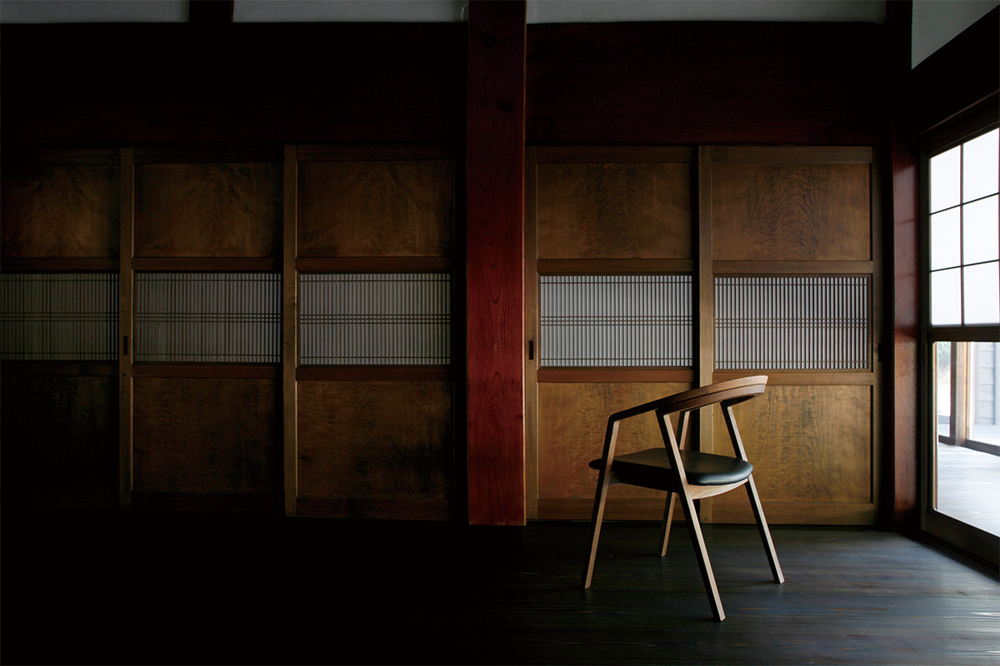
В городе Наруто на острове Сикоку стоит мастерская, где больше полувека делают только стулья. Здесь не используют шпон: каждая вещь выходит из цельного куска дерева, и рисунок волокон на нём не повторяется дважды.
Мастерская
Дерево, на котором растут стулья
Стулья мастерской «Миядзаки ису сэйсакусё» делают в префектуре Токусима, в городе Наруто на острове Сикоку. Здесь занимаются только стульями из дерева: ни диванов, ни шкафов, ни шпона. Цельный массив сохраняет живой рисунок волокон, и мастер ведёт его через всю вещь, от сиденья до последней перекладины.
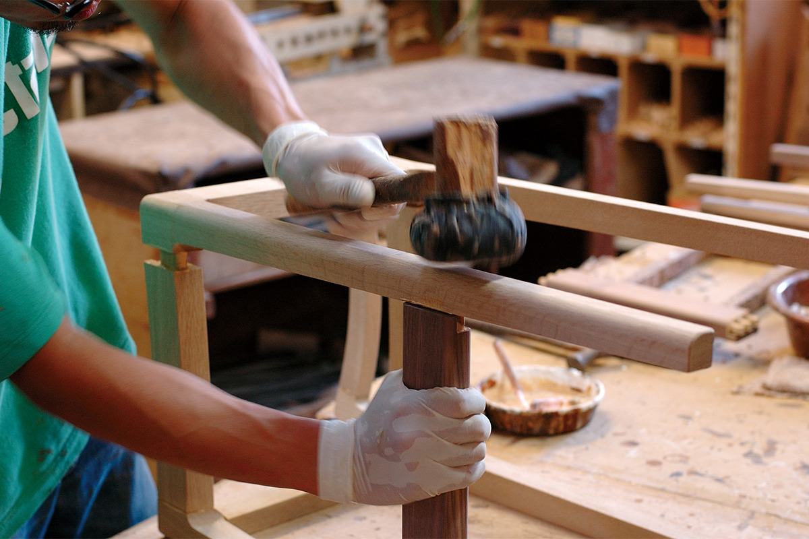
Над моделями дизайнеры работают прямо в цеху. Круг постоянных авторов сложился вокруг двух японцев, Кадзутэру Мурасавы и Макото Кодзуми, а рядом с ними в мастерскую приходят европейские дизайнеры. Тут не переписываются по почте: автор и мастер стоят у одного верстака и правят форму руками, пока стул не сядет точно. Такой способ работы здесь называют мастерским.
Свою задачу в мастерской описывают одной фразой: вырастить дерево, на котором растут стулья. Смысл простой: каждая вещь должна быть продолжением ствола, а не набором деталей.
История
1969 год и второе рождение
Мастерскую основали в 1969 году, чтобы делать табуреты и стулья для туалетных столиков. Три десятилетия она оставалась одним из многих деревообрабатывающих цехов Токусимы.
Поворот произошёл в 2000 году. Здесь сформулировали новую цель: делать стулья, у которых есть смысл и ценность японского производства. Тогда же началось сотрудничество с дизайнерами, и эту дату называют вторым рождением мастерской. В саму формулу заложили подлежащее: стулья, которые может выпустить только «Миядзаки ису сэйсакусё», и работа, которой японский мастер вправе гордиться.
Безупречный стул из редкого дерева стоит дорого, и здесь этого не скрывают. Но планка поставлена так, чтобы вещь оставалась по силам человеку, который немного поднапряжётся. Поэтому рука мастера в цехе работает рядом с современным станком: точность даёт автоматика, характер вещи даёт человек.
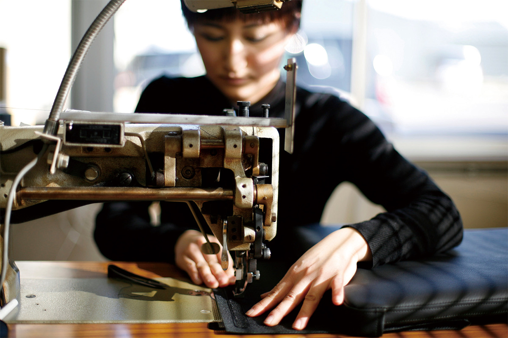
Стулья делают только под заказ, без складских запасов. Мастерская сознательно приняла риск: пока вещь делается, покупатель может уйти. Зато ни один стул не пылится на складе, а дерево не уходит в отходы.
Материалы
Тёмный венге и северная кожа
Когда мастерская готовилась отметить пятидесятилетие, один мебельный магазин предложил сделать особую серию.
«Пятьдесят лет мастерская держится на тех, кто выбрал её стулья. Может, выпустить к юбилею особую модель для своих?»
владелец мебельного салона
Так появилась серия 50-летия. В неё взяли самые ходовые модели, но собрали их из редких материалов. Юбилейные стулья продавали с ноября 2021 по октябрь 2022 года, пока хватало запаса дерева, сами модели остаются в каталоге и сегодня.
Разбираясь, почему мастерская появилась именно в Токусиме, здесь вспомнили, что деревообработка издавна была одной из главных местных отраслей, и стали искать материал, связанный с историей края. Так на местном лесном складе нашли брёвна венге, привезённые из Африки больше десяти лет назад.
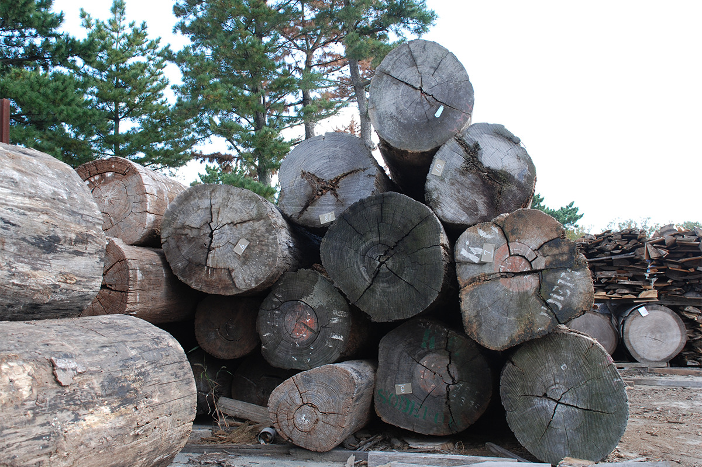
Венге это тёмно-коричневое, почти чёрное дерево с плотным тяжёлым волокном, один из лучших мебельных сортов мира. Сохнет оно крайне медленно, и хорошим становится только из хорошо высушенного ствола. Материал прочный, но в работе склонен трескаться, поэтому мастеру приходится читать волокно на ощупь и работать терпеливо, без спешки. Зато готовый стул почти не даёт усадки и служит долго. Глубокая матовая поверхность идёт и классике, и современным формам, а от прикосновения рук дерево постепенно набирает блеск.
Обивку берут у северных кожевников: сорт «Сёренсен Ройал Нубук» это плотная анилиновая кожа с мягкой поверхностью. Её спокойный промежуточный тон хорошо ложится к чёткому волокну венге.
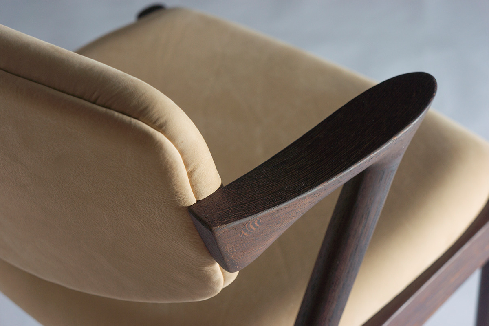
Коллекция
Стулья с характером
В каталоге мастерской десятки моделей, и все они деревянные. По нескольким из них видно, как здесь понимают стул.
pepe arm, pepe side
Эти стулья обрабатывают по собственному способу с шутливым названием «такояки»: в сечении ножки и подлокотники получаются не круг и не квадрат, а скруглённый четырёхугольник. Такая форма даёт необычное ощущение под ладонью и удобную опору для локтя, так что рука сама тянется погладить дерево. Название модели в переводе с итальянского значит «перец»: стулу отвели роль приправы, которая придаёт комнате остроты. Дизайн Кадзутэру Мурасавы, 2004 год. Цена от 49 440 иен с налогом.
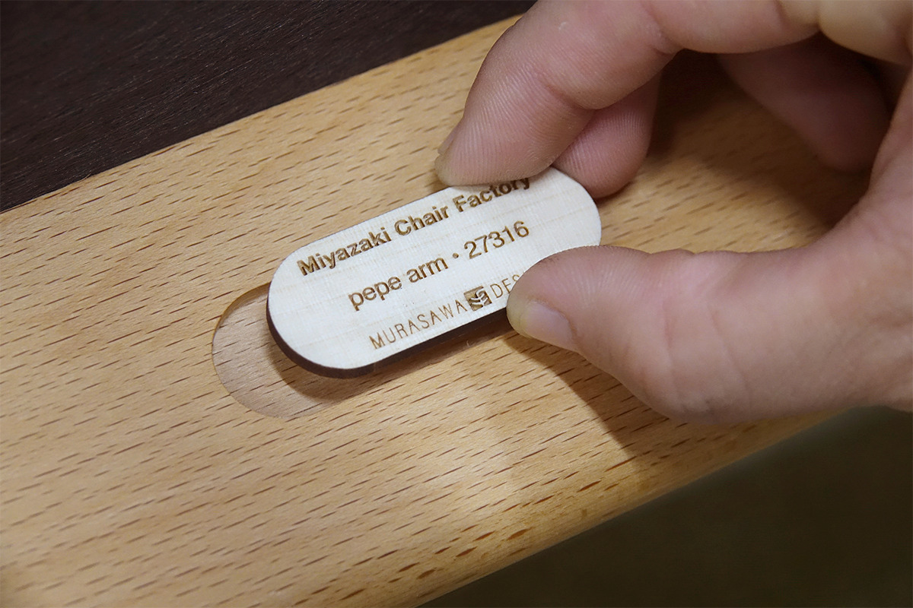
UNI-Master
Этот стул датчанин Кай Кристиансен придумал ещё в 1950-х: он показал в Дании модель под номером 4110 и держал идею в столе десятилетиями. С виду простая конструкция требует высокого мастерства, потому что дерево нужно вырезать по живой кривой. В серию стул пошёл только в 2017 году, когда чертёж соединили с возможностями мастерской. Цена от 77 220 иен с налогом.
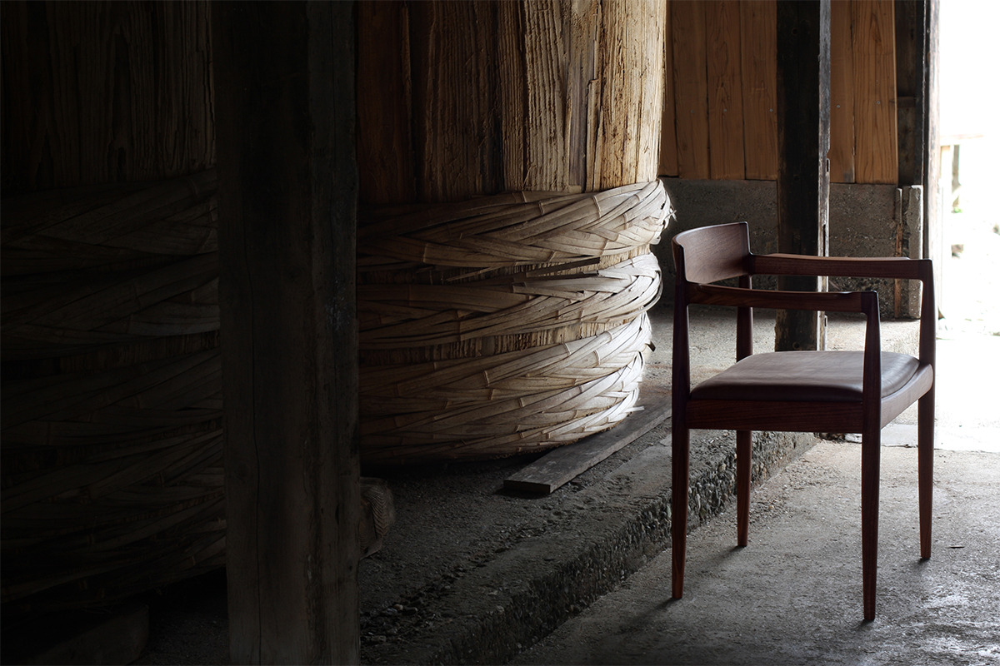
bo chair
Виндзорский стул на современный лад: спинку собирают из тонких точёных прутьев, а стойки спилены так, будто дерево само закрутилось. На вид стул хрупкий, но садишься и чувствуешь, что он мягко и плотно обнимает спину. Дизайн Макото Кодзуми, 2013 год. Цена 88 000 иен с налогом.
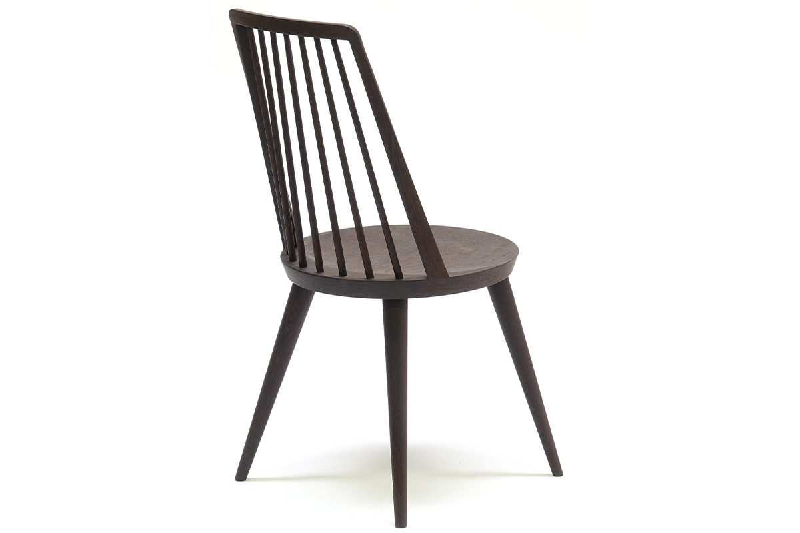
ORI
Табурет, у которого узел соединения устроен по особому способу: он держит прочность, а форма получается как у сложенного листа бумаги. Отделка тонкая, почти ювелирная. Дизайн Макото Кодзуми, 2004 год. Цена 44 880 иен с налогом.
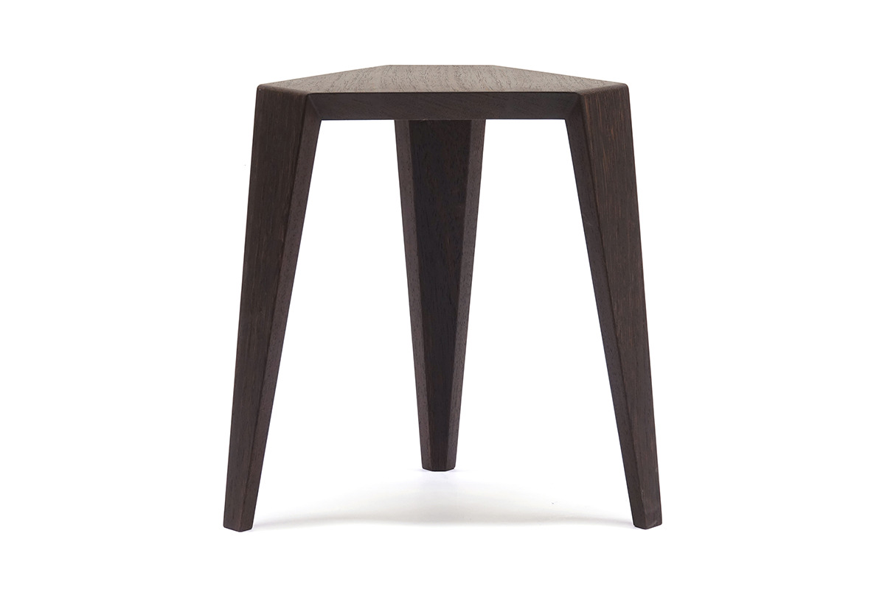
DC09
Сиденье и поперечную перекладину здесь вырезали из одного куска и сделали тонкими, а спинке, подлокотникам и ножкам придали объём и плавный изгиб. Обработан даже низ сиденья: его вырезали как скульптуру. Дизайн студии Inoda+Sveje, 2011 год. Цена 214 060 иен с налогом.
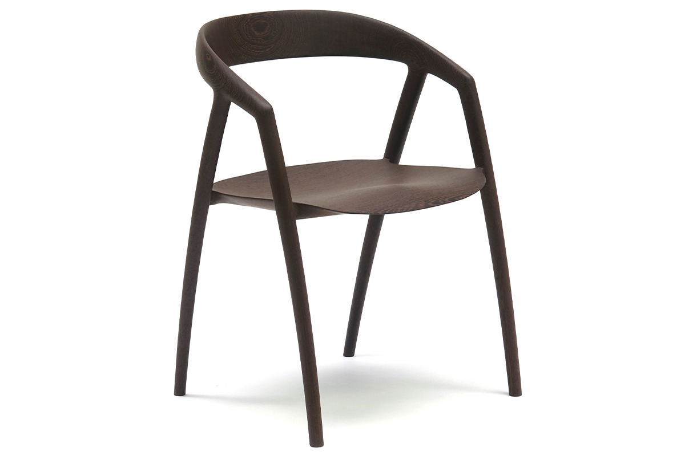
Paper Knife ottoman
Низкая скамеечка для ног из серии Paper Knife: простая и строгая. Веретенообразные ножки и форма рамы повторяют общую черту всей серии. Дизайн Кая Кристиансена, 2008 год. Цена 109 340 иен с налогом.
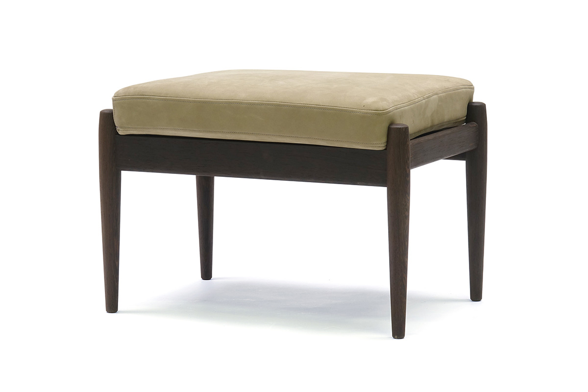
Paper Knife sofa 1P
Подлокотники этой модели сделаны по форме ножа, от которого пошло имя всей серии. Кресло по рисунку датчанина Кая Кристиансена выпустили заново. Дизайн 2008 года, цена 237 160 иен с налогом.
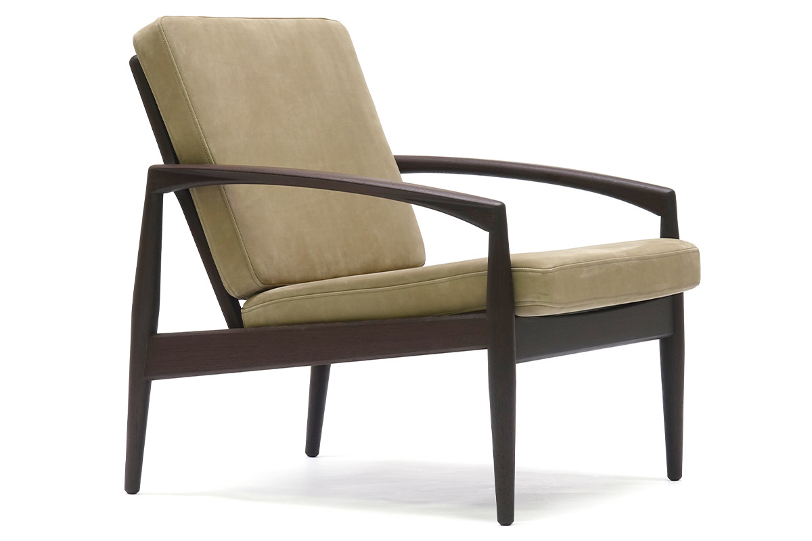
Продаёт не сама мастерская, а магазины-партнёры по всей Японии. Зато в шоуруме при фабрике в Наруто можно посидеть почти на всех стульях из каталога, а визит назначают заранее через сайт.
Каждый стул получает свой серийный номер. Даже у одной модели цвет и рисунок дерева не повторяются, поэтому пары одинаковых стульев не бывает. Свой стул здесь узнают издалека: он один такой.
Мастерская «Миядзаки ису сэйсакусё»
- Адрес
- префектура Токусима, Наруто, Оаса-тё Кавасаки, 710
- Телефон
- +81 88-641-2185
- Шоурум
- при фабрике, посещение по предварительной заявке через сайт